A javaScript program flow-ja
A javaScriptben a programok föntről lefele futnak, de ezt nem mindig így akarjuk. Van, hogy arra van szükség, hogy extra kódok legyenek benne, néha pedig ki is akarunk zárni párat, loopolni, vagy ismételni.
Itt az "if ... else ... " jön szóba, vagy a "truthy and falsy kifejezések" (igaz és hamis kifejezések), a "Comparing === to ==" (összehasonlítás), a ternary operator (terner operátor), block scope, amiről már volt szó, illetve a Loops: for, while, do...while (hurkok).
Ezek az kulcsszavak (keyword), végrehajtják azt, amit belerakunk a {} közé, akár egy soros, akár több.
If
Ahogy a nevében is benne van, feltételekkel dolgozhatunk benne. A Boolean-en alapszik, tehát az igaz (true) és a hamis (false) eredmények születhetnek. De persze példázva ez is könnyebb.
Érdemes ennél a résznél ránézni az Operátorokra (operators), amik itt vannak:
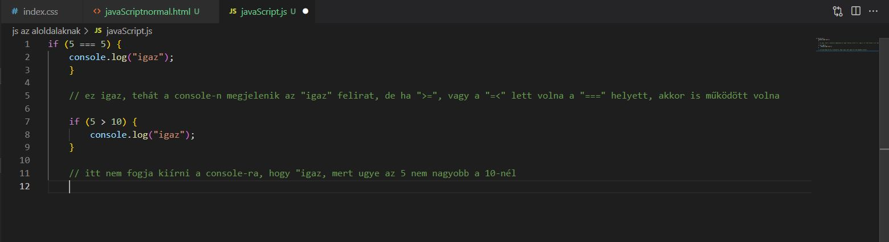Persze lehet bonyolítani a dolgokat, meg lehet azt is nézni, hogy betűkkel (string) mit operál.
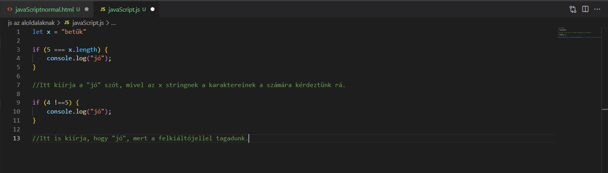A végére egy bonyolultat:

Ennél a résznél érdemes kitérést tenni arra, hogy mi is számít hamisnak (false) és igaznak (true).
| falsy | truthy |
|---|---|
| 0 | Everything NOT falsy (minden, ami nem false) |
| "" vagy '' (empity string) | true |
| null | 0.5 |
| undefined | "0" |
| NaN |
If ... else
Azt is meg kell adnunk a programsornak, hogy mi van akkor, ha az if hamis (false). Erre való az else (egyébként).
Persze, mint minden normális esetben, most is Tolkien segítségét kerjük a dolgok megértésében.
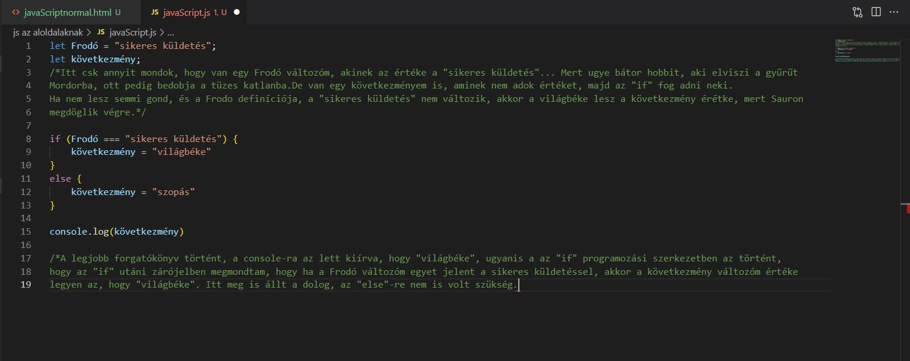De lehet olyan dolog, amikor a feltétel nem teljesül, így van egy "else" is.
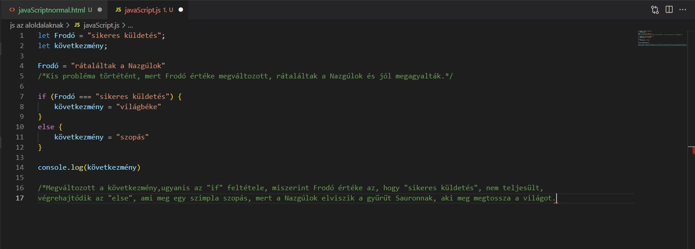Még egy utolsó példa, ahol már értékek (value) sincs megadva a változóknak (variable). Csak az számít, hogy a zárójelben true, vagy false érték van-e. Fontos észrevenni, hogy itt már csak egy egyetlen egyenlőség jel van.
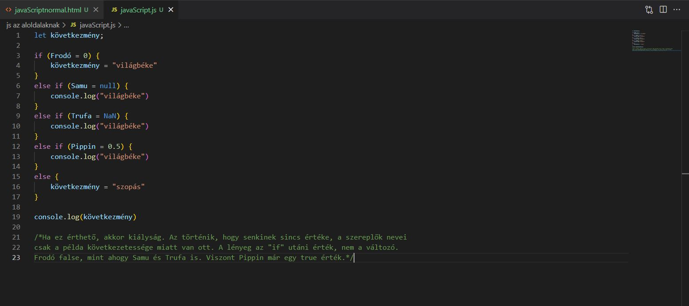Ternary operator (feltételezés)
Lehet a magyar megfelelője nem a legjobb, de talán érthető. A lényeg, hogy rövidíti az "if"-et. Persze itt is a példa segít talán a legtöbbet.
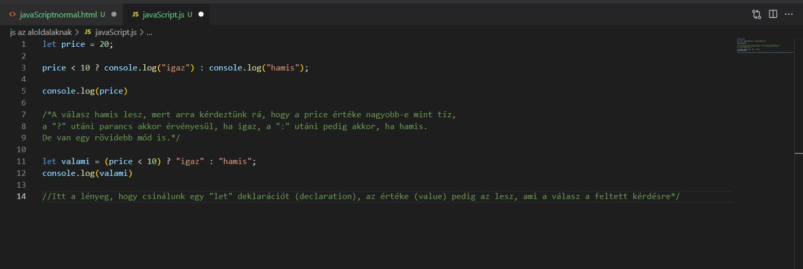Loop with for()
Néha arra van szükség, hogy néhány kód ismétlődjön. Itt is a példa a legcélravezetőbb.
A „for” keyword zárójelében van egy statement (utasítás), ami annyit mond, hogy az „i” egyenlő 0-val. Ez hajtódik először végre. Ezek után jön egy condition (feltétel), ami annyit csinál, hogy megnézi, hogy az „i” kisebb-e, mint 5, ha igen, akkor true (igaz) lesz az állítás. Ezek után a {}-ban dolgok történnek meg, majd ha az állítás, miszerint az „i” még mindig kisebb, mint 5, akkor vége is van, ha nem, akkor visszaugrik az „i++”-ra, ami hozzáad egyet az „i”-hez. Az „i” amúgy hagyományosan a loop-okhoz szokták kötni, mint változó (variable).
Folyamatosan ismétlődő programrészletek. Egy ciklus mindaddig ismétlődik, amíg a feltétele igaz. Olyan, mintha azt mondanánk, addig csináld ezt, amíg igaz, hogy…
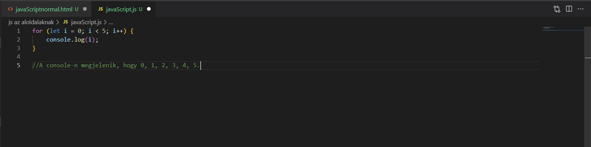A for ciklus minden programnyelvben megtalálható.
Három paramétere van:
- ciklusváltozó: egy Number típusú változó, minden futás után módosítod az értékét.
- feltétel: Boolean, amíg ez a feltétel igaz (a ciklusváltozó értékvizsgálata), addig fut a ciklus.
- léptetés: minden ciklus végén lefut, itt kell a ciklusváltozót növelni/csökkenteni./li>
Ciklusmag
Az az utasítás vagy utasítások, amelyek a feltétel teljesülése esetén lefutnak.
Elöltesztelős ciklus
Először megvizsgálod, hogy a feltételed igaz-e, és ha igen, akkor lefut a ciklusmag. Tehát a for egy tipikusan elöltesztelős ciklus. Fontos megjegyezni, hogy egy for ciklust bármikor átírhatsz while ciklusba. Tehát amit for-al megvalósíthatsz, azt while-al is, csupán a szintaxis más.
Iteráció
Az iteráció egy függvény ismételt végrehajtása az előző függvényértéken. Magyarul, az iteráció azt jelenti, hogy egy sorozat elemeit végigjárom és mindegyiken végrehajtok egy műveletet, és ez a végigjárás valamilyen sorban történik, azaz nem összevissza ugrálok a sorban található elemeken.
Tömb bejárása ciklussal
Ha szeretnéd egy kollekció összes elemét végigjárni, és valamilyen vizsgálatot vagy műveletet végezni velük, akkor általában az első elemtől indulsz, lefut a ciklusmag, és növeled az iterátort. Ezt mindaddig kell ismételned, amíg a kollekció végére nem érsz, tehát ismerned kell hozzá a hosszát.
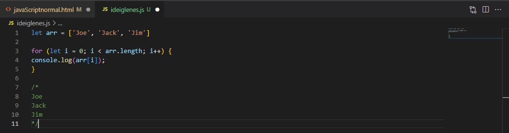continue és break
continue: ha valamiért úgy döntesz, hogy mégsem akarod lefuttatni a teljes ciklusmagot, akkor a continue utasítással tovább tudsz ugrani a következő iterációra.
break: a break utasítás nem a következő iterációra ugrik, hanem megszakítja a ciklust, azaz a ciklusmag többet nem kerül végrehajtásra, úgy is mondhatnánk, a program továbbmegy.
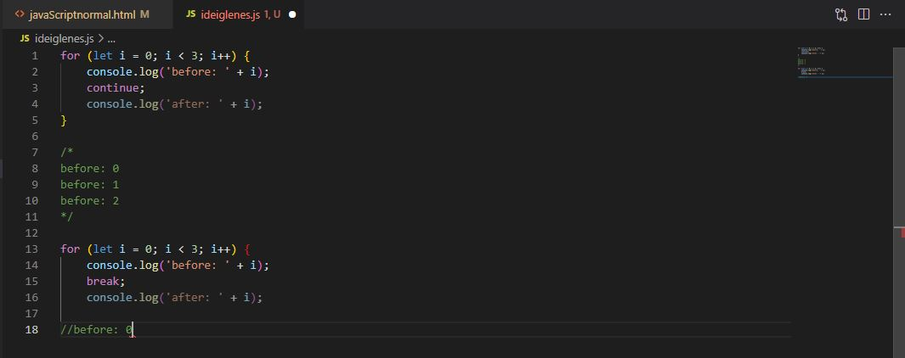A „for” keyword zárójelében van egy statement (utasítás), ami annyit mond, hogy az „i” egyenlő 0-val. Ez hajtódik először végre. Ezek után jön egy condition (feltétel), ami annyit csinál, hogy megnézi, hogy az „i” kisebb-e, mint 3, ha igen, akkor true (igaz) lesz az állítás. Ezek után a {}-ban dolgok történnek meg, majd ha az állítás, miszerint az „i” még mindig kisebb, mint 3, akkor vége is van, ha nem, akkor visszaugrik az „i++”-ra, ami hozzáad egyet az „i”-hez. Az „i” amúgy hagyományosan a loop-okhoz szokták kötni, mint változó (variable).
For... in ciklus
Több dologban különbözik a for ciklustól.
- Nincs benne iterátor változó.
- A megadott Array vagy objektum kulcsait járja be.
Paraméterei:
- kulcs változó: ebben tárolja mindig az aktuális kulcsot.
- kollekció: az a tömb vagy objektum, amelyet bejár a ciklus.
Egy egyszerű for ... in ciklus:
A k változó a key rövidítése, ez tárolja az aktuális kulcsot.
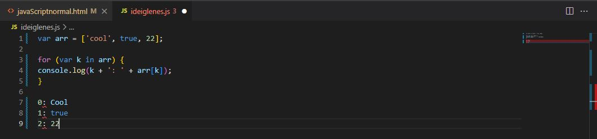Tömbre és objektumra is
Nagy előnye az alap for ciklussal szemben, hogy tömbre és objektumra is alkalmazható, nem kell hozzá külön változó, hogy végig tudd járni az objektumok kulcsait. A példában ugyanazt a ciklust használom fel tömbhöz és objektumhoz is:
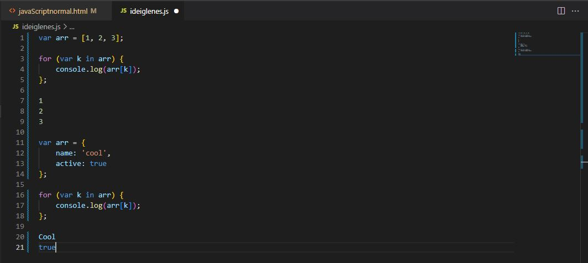Előnyei
- Tömbre és objektumra is működik.
- Egyszerűbb szintaxis.
Hátránya
- Nehezebb a futását limitálni, mert nincs külön iterátora.
A for ... in ciklus esetén is használható a continue és break utasítás.
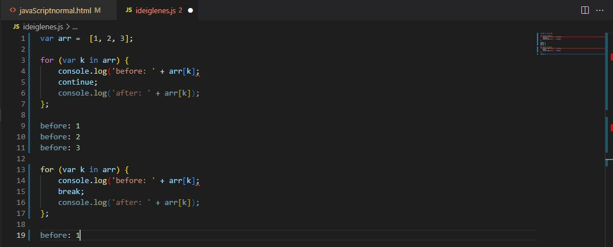For... of ciklus
Ezt a fajta ciklust az ES2015 szabvány hozta be a JS-be. A for... of ciklus hasonló a for... in -hez, de vannak különbségek.
- Nem a kulcsokon, hanem az értékeken megy végig
- Array-like, tömb szerű változókon lehet alkalmazni
Példa a használatára:
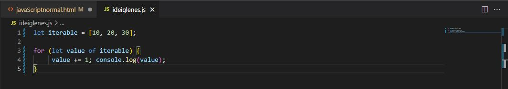Azt írja ki, hogy 11, 21, 31. A tömb az iterálható, azt be tudja járni a for... of ciklus és egyesével kiolvassa az elemeit. Ezután növeltem eggyel az értékeket és kiírtam a console-ra.
String bejárása for...of ciklussal:
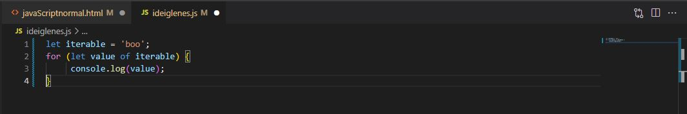Azonosan tudod elvégezni, mint a tömb esetén. Emlékszel, a String nagyon hasonlóan viselkedik, mint az Array. A kimenet "b", "o", "o" lesz.
Objektum bejárása for... of ciklussal (ha nem kell a kulcs):
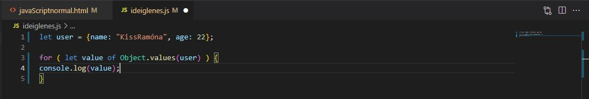Nem konkrétan az objektumot járja be a példában a ciklus, hanem kiolvasom az objektumból az értékeket, amit az Object.values() metódus egy tömbben ad vissza. Ezt a tömböt már be tudom járni, mert az Array az iterálható. Így viszont elveszítem a kulcsokat és csak az értékekkel tudok dolgozni a ciklusban. Ennek akkor van veszélye, ha nem abban a sorrendben vannak az adatok az objektumban, ahogy én arra számítottam.
Objektum bejárása for... of ciklussal (ha kell a kulcs):
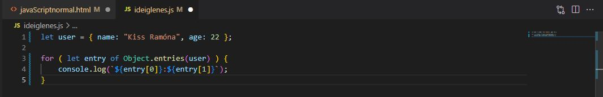Miért érdekes ez? Mert ha meghívod az Object.entries() metódust és átadsz neki egy objektumot, akkor egy tömböt ad vissza, amiben al-tömbökben az egyes tulajdonságok [key,value] formában benne vannak. Az egyes bejegyzések entry első eleme tehát a kulcs, a második az érték.
Looping with while()
Ez egy univerzális módja a dolgoknak, ugyanis a a "for" ciklusnál a deklarált változó csak a blokkon belül létezik, tehát miután lement a "for" ciklus, nem tudod kiírati az i értékét (csak a blokkon belül)
A "while" viszont a teljes lefuttatás után is létezni fog, még ki is tudjuk íratni az értéket a while ciklus után.
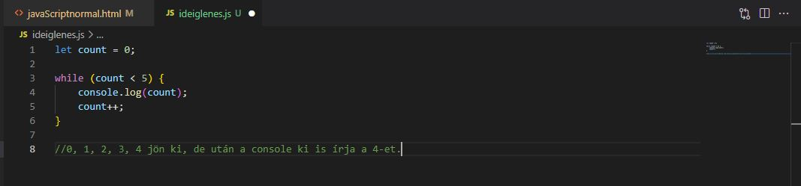Ahogy a neve is mutatja, mindaddig fut amíg a megadott feltétel igaz. Egy paramétere van, ami egy logikai kifejezés, ennek kell igaznak lennie, hogy a ciklus újra lefusson.
Végtelen ciklus
A while ciklus használata esetén gyakran előfordul, hogy a feltételt nem figyeljük megfelelően. Ekkor fordul elő, hogy a feltétel mindig igaz marad, és a ciklus végtelen hurokba kerül. A különböző értelmezők általában bizonyos számú futás után hibát adnak és leállnak, vagy lefagy a felület, mint például az alábbi esetben is.
Kollekciók bejárása
Természetesen a while ciklus is alkalmas arra, hogy tömböket vagy objektumokat járj be a segítségével. Itt viszont nem kapsz semmi segítséget ehhez, neked kell leprogramoznod a kulcsok léptetését.
A példában kiolvasom a kulcsokat, majd bejárom az objektumot, közben pedig növelem az iterátort, ami alapján előállítom a kulcsokat:
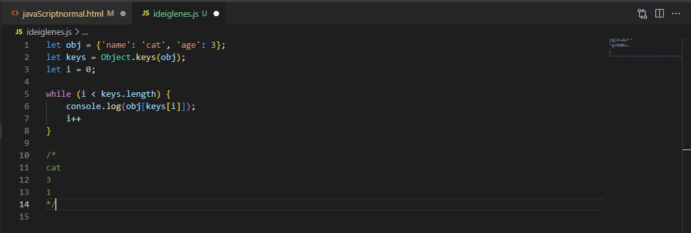Looping with do… while()
A különbség a "do" loopolásnál, hogy itt egyszer mindenképpen végig megy a blokkon belüli dolog.
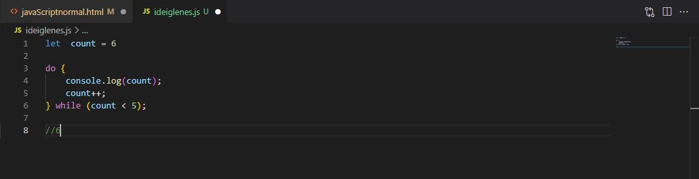dowhile - hátultesztelő ciklus
Az elöltesztelős ciklusoknál megfigyelhettük, hogy először a feltétel vizsgálata történik meg, majd utána a kiértékelés eredményétől függően a ciklusmag futtatása. Ezzel szemben a hátultesztelős ciklus először lefuttatja a ciklusmagot, és csak utána vizsgálja meg a feltételt. A gyakorlatban ez a következőképp fest:
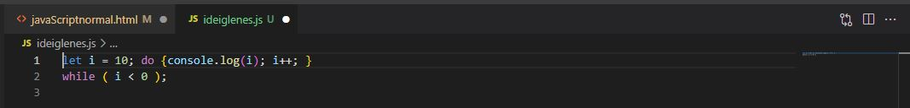A fenti esetben a konzolra kiírja a program, hogy 10, ugyanis a hátultesztelős ciklus lényege, hogy akár igaz a feltétel, akár hamis, egy alkalommal biztosan le fog futni.
Elemi algoritmusok
Algoritmus, avagy al-Hvárizmi kicsit félrefordítva
Az algoritmus egy feladat, probléma megoldásához vezető lépések, utasítások sorozata. Például egy recept is egy algoritmus, leírja lépésenként, hogyan kell elkészíteni egy ételt. Ha követed pontosan az utasításokat, akkor valószínűleg sikerül neked is az asztalra varázsolni a vacsorát. Ez persze függ attól is, mennyire részletesen tartalmazza a recept az adott étel elkészítéséhez tartozó lépéseket. Egy kezdőnek természetesen minden apró mozzanatot el kell magyarázni, míg egy gyakorlott séfnek elegendő egy nagyobb léptékű leírás. Ebből is látszik, hogy egy problémát nem csak egyféle algoritmussal oldhatsz meg. Nemcsak a lépések mélységében különbözhetnek ezek az algoritmusok, hanem akár teljesen más lépésekből is állhatnak, és a végeredmény mégis ugyanaz.
Az algoritmus jellemzői
Az egyszerű algoritmusokon túl lehetnek akár igen bonyolultak is, mint pl. egy nagy forgalmú reptér irányítása. Az algoritmussal szemben ezért is állítottak néhány követelményt:
- Véges: véges számú lépésből áll.
- Egyértelmű: a megoldáshoz vezető lépéssorozat tisztán, egyértelműen van megadva, és szigorúan követhető, nem hagy kétségeket.
- égezhető: elvárjuk, hogy az algoritmust végre lehessen hajtani, vagyis a lépések elég egyszerűek legyenek, hogy pontosan végre lehessen hajtani.
Algoritmusleíró eszközök
Az algoritmus leírásának módja több tényezőtől függ, például a megoldandó problémától és a célközönségtől. Egy egyszerű algoritmust akár szövegesen is leírhatsz pár mondatban röviden, pl. a reggeli kávé elkészítése:
- Bekapcsolom a kávéfőző gépet.
- Ellenőrzőm, hogy van-e elég kávé és víz a gépben.
- Amikor felmelegedett, odateszem a csészét és megnyomom az espresso gombot.
Előfordulhat, hogy képeket használnak az algoritmus bemutatására vagy önállóan, vagy a szöveges leírás mellé kiegészítésképpen. Gondolj csak a repülőgépeken a Safety On Board leírásokra (ne legyen rá szükséged), például mi a teendő, ha fogy az oxigén az utastérből.
Amíg csak utasításokat kell sorrendben egymás után sorolnom, addig ezek a módszerek teljesen megfelelnek. Viszont amikor már a szekvencián kívül más vezérlő szerkezetet is tartalmaz az algoritmus, akkor szerencsésebb lehet valami olyan leíró eszköz, ami szemléletesebb. A folyamatábra például a folyó szövegnél sokkal kifejezőbb ezekben az esetekben.
Vezérlési szerkezetek
A szekvencián kívül két vezérlési szerkezetet használtunk a folyamatábrán.
Az egyik az elágazás (szelekció), amikor feltételtől függően más-más irányba halad tovább a vezérlés.
A másik szerkezet az ismétlés (iteráció), amikor bizonyos esetben visszairányítjuk a vezérlést egy korábbi pontra, mint pl. amikor várakoztunk, amíg fel nem melegedett a gép.
Az elágazás és ciklus különböző fajtáiról majd a későbbiekben lesz szó.
Strukturált algoritmus
Strukturált az algoritmus, ha csak az alap 3 vezérlőszerkezetet (szekvencia, szelekció, iteráció) használod. Ezeket egymásba is ágyazhatod, de minden ilyen egységnek csak egy kimenete lehet. Vagyis nem húzhatod a nyilakat bárhova.
Pszeudo kód, a kis hamis
Kávéfőző bekapcsolása
IF nincs elég kávé THEN
kávé hozzáadása
ENDIF
IF nincs elég víz THEN
víz hozzáadása
ENDIF
WHILE nem melegedett fel
10 mp várakozás
ENDWHILE
csésze odahelyezése
gomb megnyomása
Nagyon fontos az indentálás (beljebb kezdés), hogy lásd az algoritmus szerkezetét, ezáltal látod az alapstruktúrák egymásba ágyazását.
A pszeudo kódban könnyebb betartani, hogy strukturált algoritmust írj, a folyamatábrán könnyű a nyilakat úgy húzni, hogy elveszítsd a strukturáltságot. Napjainkban is van azért helye, például az UML-ben (Unified Modeling Language) is találunk a folyamatábrához hasonlót, csak ott aktivitás diagramnak nevezik. Az UML tulajdonképpen egy vizuális modellező nyelv, ami nagyon hasznosnak bizonyul a szoftverek készítésének folyamatában, leginkább a kezdeti analizáló és tervező fázisban. Az objektum orientált programozás tanulásakor használunk majd osztálydiagramot is, ami szintén az UML része.
Természetesen az itt bemutatottakon kívül még más algoritmusleíró eszközök is léteznek, pl. a struktogram, de ezeket most hagyjuk pihenni.
Használandó vezérlési szerkezetek a programkódban
Mivel minden algoritmus felépíthető három vezérlési szerkezet használatával, a programkódban is csak ezeket kell most használnod:
- szekvencia,
- szelekció,
- iteráció.
- Van még az ugrás, de arra most nincs szükség.
Elemi algoritmusok
Van néhány olyan folyamat a programozás során, amire az idők során kialakultak a hatékony technikák. Most ezeket mutatom meg.
Ismétlés: Az algoritmus azon lépések sorozata, amelyek egy probléma megoldásához vezetnek.
Az algoritmus
Tehát mindig úgy kezdődik, hogy van egy problémád. Ezt a problémát általában sokféleképpen meg lehet oldani, így ahány megoldás létezik, annyi algoritmus van hozzá. Jöjjön egy példa
bankkártyás fizetésre: milyen lépésekből áll amikor kártyával fizetsz a boltban?
- Előveszed a bankkártyát.
- Ellenőrzöd az összeget a kijelzőn.
- Hozzáérinted a kártyát a terminálhoz.
- Megvárod a hangjelzést.
- Elteszed a kártyát.
Ez az öt lépés gyakorlatilag egy algoritmus. A minimálisan szükséges lépéseket tartalmazza a megoldáshoz. Ki lehetne terjeszteni a teljes vásárlás folyamatára is, de abban az esetben olyan lépések is lennének benne, mint mondjuk betesszük a terméket a kosárba, vagy távozunk a boltól.
Nevezetes algoritmusok
Azért hívják őket nevezetesnek, mert gyakran kell őket használni. Olyan programozási folyamatokat írnak le, amelyek nagyon gyakoriak a hétköznapi munka során. Most csak röviden áttekintjük őket, de részletesen is foglalkozunk majd velük, illetve begyakoroljuk őket.
Pszeudokód
Mielőtt azonban tanulmányoznánk az algoritmusokat, ismerkedjünk meg a pszeudokód fogalmával! Itt az egyes lépéseket egyszerű, beszélt nyelven írjuk le. Azért jó, mert csak az algoritmust adjuk meg, és utána gyakorlatilag bármilyen programozási nyelven el tudjuk készíteni a végleges kódot. Azaz nyelvfüggetlen. Például így néz ki egy ciklus, amellyel sokat fogunk még dolgozni:
CIKLUS AMÍG van még szám, ADDIG
szám = következő elem
KI: szám
CIKLUS VÉGE
Ha elemzed a fenti kódot, azt látod, hogy addig fog a ciklus futni, amíg nem ér végig a számokon, amik mondjuk egy tömbben is lehetnek. Minden ciklusmagban beállítja a számot és kiírja az értékét, azaz lényegében kiírja a tömb vagy lista elemeit.
Összegzés tétele
A feladat egyszerű, egy sorozat elemeit kell összesíteni. A pszeudokód:
összeg = 0
CIKLUS AMÍG van még szám, ADDIG
szám = következő elem
összeg = összeg + szám
CIKLUS VÉGE
Számlálás tétele
Itt össze kell számolni, hogy egy bizonyos feltétel hány elemre igaz.
db = 0
CIKLUS AMÍG van még szám, ADDIG
szám = következő elem
HA igaz a feltétel szám-ra, AKKOR
db = db+1
FELTÉTEL VÉGE
CIKLUS VÉGE
Szélsőérték keresése (maximum vagy minimum)
A dolog egyszerű. Van mondjuk egy számsorozatod, és meg kell mondanod, hogy melyik a legkisebb vagy legnagyobb szám, azaz a szélsőértékeket keresed.
legnagyobb = első elem
CIKLUS AMÍG van még szám, ADDIG
szám = következő elem
HA szám > legnagyobb, AKKOR
legnagyobb = szám
FELTÉTEL VÉGE
CIKLUS VÉGE
Eldöntés tétele
Megvizsgálod, szerepel-e olyan elem a sorozatban, melyre igaz a feltétel. Például: prímszám-e. Ahogy találsz egy osztót, ami nem önmaga és nem 1, tudod hogy nem az.
találat = HAMIS
CIKLUS AMÍG van elem ÉS NEM találat
szám = következő elem
HA igaz a feltétel szám-ra, AKKOR
találat = IGAZ
FELTÉTEL VÉGE
CIKLUS VÉGE
Egyéb algoritmusok
A későbbiekben más algoritmusokkal is foglalkozunk majd, de a fenti négy képezi a programozási elmélet egyik alapkövét.
Összegző és számláló algoritmusok
Itt a nevezetes algoritmusok vagy programozási tételek közül az első kettő kerül terítékre. Nem lesz bonyolult, de kicsit hivatalosabban fogalmazok majd, ne ijedj meg.
Összegzés
Először lássuk az elméletet. Így nézett ki a pszeudokód:
összeg = 0
CIKLUS AMÍG van még szám, ADDIG
szám = következő elem
összeg = összeg + szám
CIKLUS VÉGE
Példa:
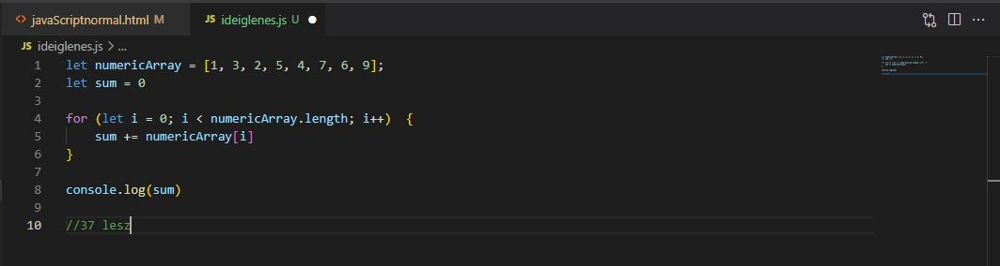Alapvető megállapítások:
- Az "akkumulátor" változó az, amelyikben összegyűlik, akkumulálódik az eredmény, ezt most összeg néven tüntettük fel. Ezt először nulláznod kell, utána minden feldolgozott számot hozzá kell adnod. Minden iteráció végén az addig látott számok összegét fogja így tartalmazni. Ha esetleg egyszer sem hajtódott volna végre a ciklus, akkor pedig nullát.
- A ciklus ebben az esetben a teljes sorozaton végig kell hogy iteráljon, mivel az összes számot össze szeretnéd adni.
- A pszeudokódban külön kiemelheted a következő számot egy változóba szám néven, majd ezt adod hozzá az összeghez. Ez a konkrét implementációnál, azaz amikor valamilyen nyelven lekódolod a példát, már egy sorban is könnyen megoldható.
JavaScript kód:
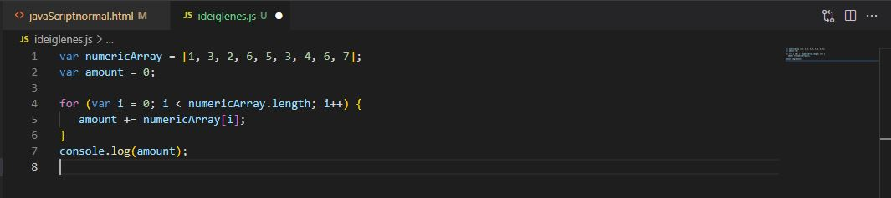A kód magyarázata:
- Az első és utolsó sor, azaz a tömb létrehozása és a console-ra való kiírás nem volt benne a pszeudokódban, ezek a konkrét implementáció során már szükségesek.
- Az algoritmus megvalósítása négy sor csupán, a konkrét implementáció általában rövidebb a pszeudokódnál.
- Az akkumulálásra, azaz az összeg összegyűjtésére az "amount" nevű változót definiáltam, hoztam létre.
- A ciklus egy egyszerű for ciklus. Azért választottam ezt, mert szinte az összes nyelvben ez a szintaxisa. Az iterációk száma megegyezik a tömb elemeinek a számával.
- A ciklusmagban a "+=" rövidítést használtam, ez az összetett operátor mindig a jobb oldalon álló értékkel növeli a változó értékét.
Fontos: Az akkumulátor változót mindig a cikluson kívül hozzuk létre és inicializáljuk!
Számlálás
Itt is jöjjön az elmélet:
db = 0
CIKLUS AMÍG van még szám, ADDIG
szám = következő elem
HA igaz a feltétel szám-ra, AKKOR
db = db+1
FELTÉTEL VÉGE
CIKLUS VÉGE
Példa:
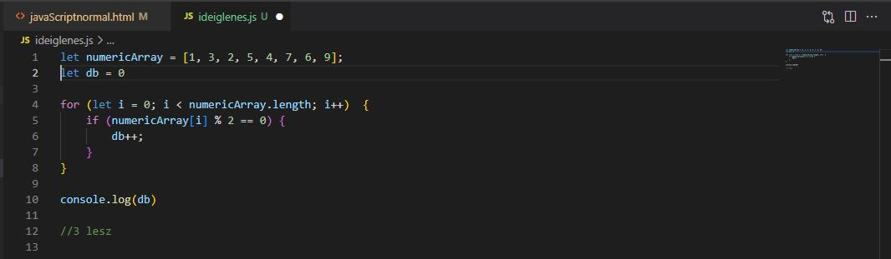Alapvető megállapítások:
- Nagyon hasonló az összegzéshez, két dologban különbözik tőle.
- A db nevű változó nem az összeget tartalmazza, hanem az elemek számát.
- Csak azokat az elemeket számolja bele az eredménybe, amelyekre egy adott feltétel igaz.
JavaScript kód:
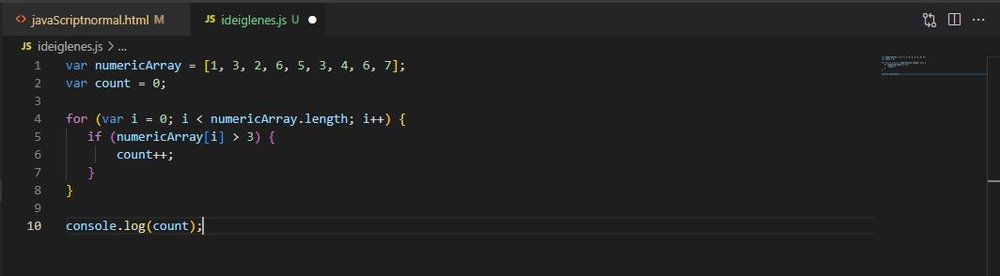A kód magyarázata:
- A megfelelő elemek számát a "count" nevű változóba gyűjtöttem.
- Az összes elemen végigiterál a ciklus.
- Ha az adott elem értéke nagyobb, mint 3, akkor növeli a "count" változó értékét eggyel.
Szélsőérték és eldöntés algoritmusa
Most pedig megmutatom a szélsőérték keresés és az eldöntés algoritmusát.
Szélsőérték
Ha van egy nem üres sorozat, akkor két szélső érték lesz benne, a legkisebb és a legnagyobb. Szokták maximum vagy minimum kiválasztásnak is hívni ezt az eljárást. Előfeltétele, hogy az elemek egymással összehasonlíthatóak legyenek, azaz el tudjuk dönteni, hogy két elem közül melyik a nagyobb. Először a pszeudokód:
legnagyobb = első elem
CIKLUS AMÍG van még szám, ADDIG
szám = következő elem
HA szám > legnagyobb, AKKOR
legnagyobb = szám
FELTÉTEL VÉGE
CIKLUS VÉGE
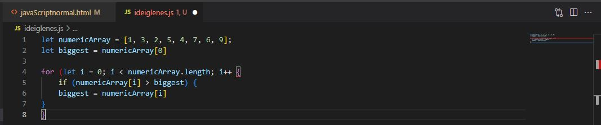
Alapvető megállapítások:
- A szélsőérték keresés során mindig azt feltételezzük, hogy az első elem a kiválasztott, azaz a legkisebb vagy legnagyobb, attól függően, hogy melyiket keressük. Ez azt jelenti, hogy a legnagyobb az első elem.
- Ha nem rendezett az elemek listája, akkor minden elemen végig kell iterálnunk egy ciklussal, mivel nem tudjuk, hogy vannak-e még nagyobb vagy kisebb elemek a listában.
- Az eldöntés tételéhez nagyon hasonlóan, itt is van egy feltétel a ciklusmagban. Ez a feltétel azt vizsgálja, hogy a legutóbb maximumnak tartott értékhez képest a jelenlegi érték nagyobb-e. Ha igen, akkor a jelenlegi értéket állítja be legnagyobb értéknek.
- A minimum kiválasztás gyakorlatilag megegyezik ezzel, csupán a relációs jelet kell megfordítanunk a ciklusmagban, amikor vizsgáljuk a feltételt.
JavaScript kód:
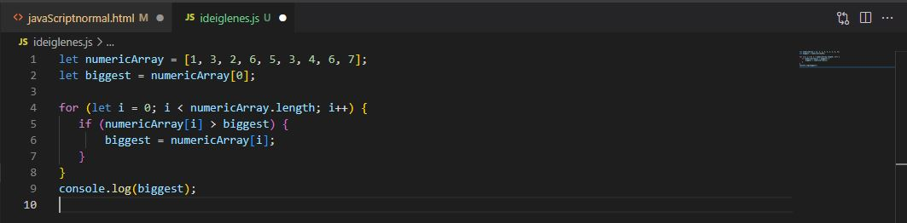A kód magyarázata:
- Feltételezzük, hogy az első elem a legnagyobb, ezért be is állítjuk a tömb első elemét a "biggest" értékeként.
- A ciklussal a teljes tömbön végigiterálunk.
- Ha az adott elem nagyobb, mint a feltételezett legnagyobb, azaz a "biggest", akkor a "biggest"-et felülírjuk az elemre.
- Végül logoljuk az eredményt.
Eldöntés
Itt is kezdjük az elmélettel! Az alapfeladat kétféle lehet. Vagy azt akarjuk eldönteni, hogy egy sorozatban van-e valamilyen tulajdonsággal rendelkező elem, vagy azt, hogy minden elem rendelkezik-e az adott tulajdonsággal. Mindkét esetben logikai érték lesz a válasz.
Lássuk először az első esetet:
találat = HAMIS
CIKLUS AMÍG van elem ÉS NEM találat
szám = következő elem
HA igaz a feltétel szám-ra, AKKOR
találat = IGAZ
FELTÉTEL VÉGE
CIKLUS VÉGE
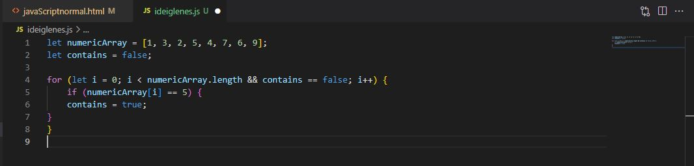
Alapvető megállapítások:
- A "találat" változót hamis értékkel definiáljuk, azaz azt felételezzük, hogy nincs találat.
- A ciklus feltételében nem csak az elemek szerepelnek, azt is vizsgáljuk, hogy van-e találat. Így ha már van találat, akkor a ciklus nem fog többet lefutni.
- Ha az aktuális elem a keresett tulajdonságú, akkor a "találat" igazzá válik, és a ciklus futása leáll.
- Ha egyetlen elemre sem igaz a feltétel, akkor a ciklus az összes elemet bejárja, és utána a "találat" változó hamis marad.
Lássunk egy példát: arra keressük a választ, hogy a számok sorozatában van-e hatos.
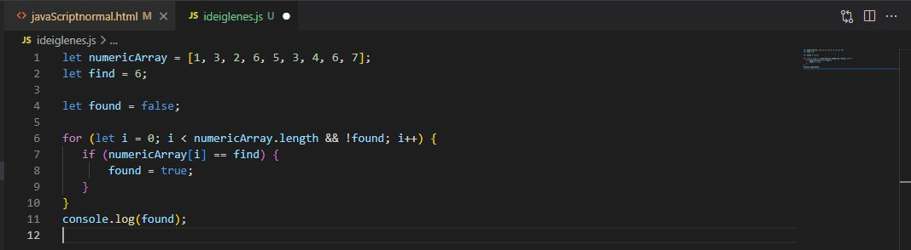A kód magyarázata:
- Az "i" változó fogja tárolni, hogy éppen hol járunk a tömb iterálása során.
- A "find" tartalmazza a keresett értéket.
- A "found" változó tárolja, hogy megtaláltuk-e a keresett értéket.
- Ha a vizsgálat igaz, azaz a tömb aktuálisan vizsgált elemének értéke megegyezik a keresett értékkel, akkor a "found" változót true értékre állítjuk. Ennek hatására a ciklus nem fog többet lefutni, mivel a feltétele hamissá válik.
- Végül logoljuk az eredményt.
Most nézzük meg azt az esetet, amikor az a kérdés, hogy minden elem rendelkezik-e az adott tulajdonsággal. Ha az éppen vizsgált elem megfelelő, az még nem ad nekünk választ, tovább kell vizsgálódnunk. Ha az aktuális elem nem megfelelő, akkor viszont biztosak lehetünk benne, hogy a válasz hamis, azaz nem minden elem rendelkezik az adott tulajdonsággal. Ez alapján a módosított algoritmus a következő:
mind = IGAZ
CIKLUS AMÍG van elem ÉS mind
elem = következő elem
HA nem a keresett tulajdonságú az elem, AKKOR
mind = HAMIS
FELTÉTEL VÉGE
CIKLUS VÉGE
Alapvető megállapítások:
- A "mind" változót igaz értékkel definiáljuk, azaz azt felételezzük, hogy minden elem megfelelő.
- A ciklus feltételében azt is vizsgáljuk, hogy még mindig igaz-e "mind"-re. Így ha már valamelyik elem nem volt megfelelő, akkor a ciklus nem fog többet lefutni.
- Ha az aktuális elem nem az adott tulajdonságú, akkor a "mind" hamissá válik, és a ciklus futása leáll.
- Ha minden elemre igaz a feltétel, akkor a ciklus az összes elemet bejárja, és utána a "mind" változó igaz marad.
Lássunk egy példát: arra keressünk a választ, hogy számok sorozatában mind pozitív-e.
JavaScript kód:
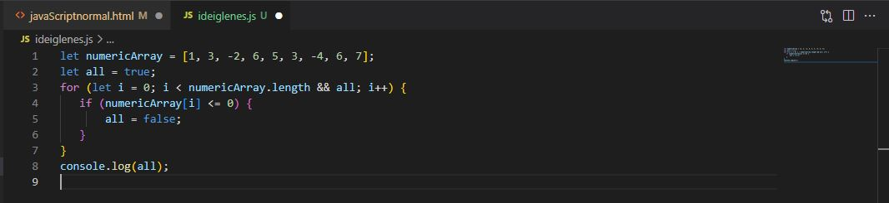A kód magyarázata:
- Az "i" változó fogja tárolni, hogy éppen hol járunk a tömb iterálása során.
- Az "all" változó tárolja, hogy mind pozitív-e.
- Ha a vizsgálat igaz, azaz a tömb aktuálisan vizsgált elemének értéke nem pozitív, akkor az "all" változót false értékre állítjuk. Ennek hatására a ciklus nem fog többet lefutni, mivel a feltétele hamissá válik.
- Végül logoljuk az eredményt.